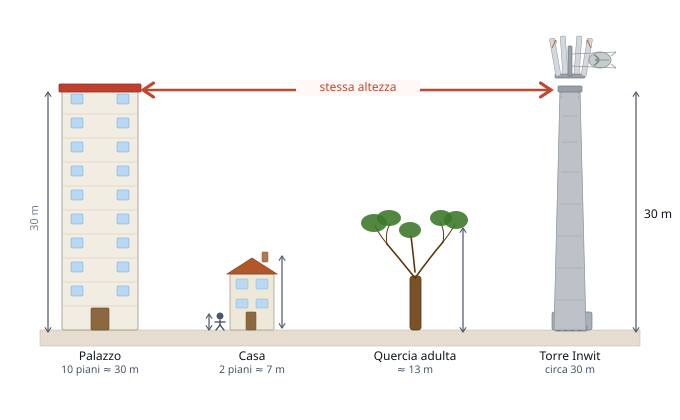
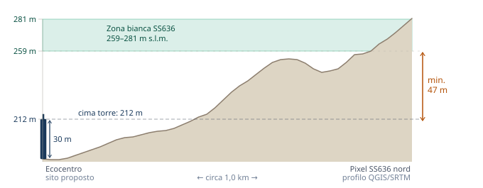

L'analisi tecnica
Quando il Consiglio Comunale ha approvato il sito dell'ecocentro come posizione per la torre, molte domande erano ancora senza risposta: quanto sarà alta davvero la torre? Il sito è quello giusto o esistono alternative migliori? Cosa dice il contratto che il Comune sta per firmare?
L'analisi tecnica è nata per rispondere a queste domande, raccogliendo dati pubblici ufficiali — mappe Infratel, normativa, giurisprudenza — e organizzandoli in modo accessibile per chi non è un tecnico di telecomunicazioni.
Non è un atto di opposizione al 5G. È un atto di buona informazione: le domande giuste, fatte nel momento giusto, cioè prima della firma del contratto.
Il mandato PNRR e cosa c'entra Moricone
Inwit ha vinto una gara pubblica per portare copertura mobile nelle "zone bianche" — aree rurali e strade prive di segnale. A Moricone, le zone bianche sono lungo la SS636, a est del paese: strade e campi, non il centro abitato. Il mandato di Inwit è coprire quelle strade. Portare il 5G nel paese è un obiettivo aggiuntivo che il Comune ha scelto di perseguire — una scelta comprensibile, ma che ha implicazioni concrete sulla posizione e sull'altezza della torre.
Il sito scelto e il problema della scala
Il Comune ha individuato l'area dell'ecocentro, in località Crocetta, come sito per la torre. È un terreno pubblico, già infrastrutturato, distante dal centro storico. La torre annunciata è alta 30 metri.

30 metri è l'altezza di un palazzo di 10 piani. La torre Inwit è un'infrastruttura permanente, visibile da lontano.
Trent'anni fa una struttura così sarebbe sembrata fuori scala in un comune di 2.400 abitanti. Oggi la normativa la consente — ma la scelta del sito, e in particolare la sua quota, determina se quella struttura dovrà essere ancora più alta.
Il problema del dislivello
L'ecocentro si trova a 182 metri sul livello del mare. I pixel della zona bianca da coprire, lungo la SS636, sono tra 259 e 281 metri. La cima di una torre da 30 metri installata all'ecocentro arriverebbe a 212 metri — significativamente più bassa delle zone che deve coprire.

La cima della torre (212 m) deve raggiungere con il segnale la zona bianca (259–281 m). La freccia arancione indica il dislivello minimo da compensare: almeno 47 metri. Se la simulazione tecnica confermasse questo dato, la torre dovrebbe essere più alta dei 30 m annunciati.
Non è prassi installare torri di copertura in posizione di svantaggio altimetrico rispetto all'area target: serve più altezza per compensare, e più altezza significa più impatto visivo. Un sito in quota più elevata — più vicino alla zona bianca — consentirebbe una struttura più bassa per ottenere la stessa copertura.
Il Comune non deve essere proprietario del terreno
Durante il processo di selezione, il Comune ha privilegiato terreni pubblici con l'argomento che solo così avrebbe potuto controllare l'infrastruttura. Ma questo confonde due ruoli distinti.
Come proprietario del terreno, il Comune negozia il contratto di locazione. Come autorità regolatoria, rilascia o nega il permesso di costruire — e può imporre condizioni vincolanti su qualunque sito del territorio comunale, pubblico o privato: altezza massima, numero di operatori, monitoraggio elettromagnetico. Un sito privato non sottrae al Comune nessuno di questi strumenti.
Il Comune può adottare un regolamento antenne
La legge consente ai Comuni di adottare un regolamento che definisce criteri localizzativi per le antenne: distanze, quote, criteri paesaggistici (art. 8 c.6 L. 36/2001). Se Moricone adottasse un regolamento puntuale, Inwit sarebbe tenuta a rispettarlo. Combinato con una simulazione comparativa tra siti alternativi, il regolamento è lo strumento più solido per ottenere un sito migliore — senza bloccare il 5G, che resta un obiettivo condivisibile.
Il Comune ha già detto "lontano dalle case"
Nel processo di valutazione, il Comune ha escluso diversi siti pubblici ritenendo inaccettabile la loro vicinanza alle abitazioni. È un criterio ragionevole. L'ecocentro, però, si trova a circa 200 metri dalle prime case. Un criterio stabilito dal Comune nel proprio processo valutativo merita di essere applicato con coerenza — a tutti i siti, incluso quello scelto.
Inwit e la co-location: interessi divergenti
Inwit non è un operatore telefonico: non vende abbonamenti. Guadagna affittando spazio sulla torre agli operatori (TIM, Vodafone, WindTre, Iliad…). Più operatori salgono sulla stessa torre, più Inwit guadagna. Ha quindi tutto l'interesse a scegliere un sito che copre bene il paese — così la torre diventa attrattiva per più operatori nel tempo. L'interesse di Inwit e quello dei residenti non coincidono: Inwit non ha incentivi a preoccuparsi dell'impatto paesaggistico o della crescita progressiva dell'infrastruttura. Per questo le clausole contrattuali sono l'unico strumento di tutela nel tempo: altezza massima, numero massimo di operatori, monitoraggio indipendente.
Cosa resta aperto
Al momento del deposito dell'analisi tecnica (9 marzo 2026, protocollo n. 1456), il contratto con Inwit non risultava ancora firmato allo stato degli atti pubblicamente disponibili. Prima della firma, il Comune ha ancora la possibilità di richiedere una simulazione comparativa tra il sito dell'ecocentro e almeno un sito alternativo, e di negoziare clausole contrattuali vincolanti. Un contratto mal negoziato oggi è difficile da modificare per tutta la sua durata.
Le richieste formali di accesso agli atti depositate al Comune sono consultabili nella sezione dedicata →